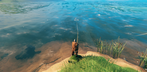

钓鱼
本站支持中英文站内搜索。带 ↗ 的链接指向外部网站；各页来源版本见页脚。


获得一些鱼饵和一根鱼竿后即可进行钓鱼，获取食物和装饰物。迷雾之地更新引入了不同种类的鱼和鱼饵。
基础鱼饵只能从商人处获得，但钓竿既可购买，也可在冰霜洞穴中找到。不用钓竿也能直接捡鱼，因为鱼有时会搁浅在岸上，甚至偶尔跳进轮船。
如何钓鱼
开始钓鱼前，玩家必须先取得钓竿和一些鱼饵。
抛竿和收鱼都需要耐力。按住攻击键蓄力，松开后抛出鱼线。鱼靠近浮标并咬钩、将浮标拉入水中后，按格挡键即可钩住鱼，再按住格挡键收线。将鱼收至约1-2米内后，注视鱼并按使用键即可拾取。
鱼挂在鱼线上时会少量消耗耐力，收线时消耗略多。若鱼在浮标处挣扎，收线的耐力消耗会大幅增加。耐力耗尽会使鱼逃脱。此外，离开浮标约30米以上也会拉断鱼线，失去这条鱼。
策略攻略
钓鱼可能不太容易掌握。一种方法是沿岸寻找成群的鱼，再用未完全蓄力的短距离抛竿。
收取较大的鱼会更快消耗耐力。玩家可饮用耐力蜜酒补充耐力，继续收线；其冷却时间为两分钟。
鱼上钩后，鱼线长度会锁定，因此并不一定需要收线。玩家可以缓缓后退至岸边，仅消耗少量耐力；鱼可能搁浅在岸上，供玩家直接拾取。
玩家可在天然海湾附近建造鱼堰，等待大浪期间鱼进入其中，再用手拾取。
机制
鱼会害怕玩家产生的噪声，听见任何玩家时都会逃离。
每条鱼每5-15秒随机检查一次浮标。50米内的每个浮标都有10%概率吸引该鱼。
被吸引的鱼会朝浮标游动随机5-15秒，若成功到达就会咬钩。咬钩后在0.5秒内收线即可钩住鱼。上钩后，鱼会交替挣扎和停止挣扎，改变收线速度及耐力消耗；详见鱼。
技能等级0时，玩家的基础收线速度为2米/秒，每个技能等级提高2%，技能等级100时最高达到6米/秒。耐力消耗取决于鱼的种类和等级，再乘以技能等级决定的系数：技能等级0时消耗基础值的100%，每级降低0.8%，技能等级100时最低消耗20%。
以下行为会提升钓鱼技能：
- 装备鱼饵时主动收取空鱼线。
- 主动收取上钩的鱼，经验为空鱼线的两倍。
钓鱼经验唯一通过上述两种行为获得。特别是，实际捕获鱼的动作，无论完全收线还是直接拾取上钩的鱼，都不会增加经验，只有收线会提供经验。因此，仅从经验收益看，完全收线优于直接拾取。钓鱼经验不要取决于上钩鱼的种类，只取决于是否有任意鱼上钩。
说明
- 水中的鱼就是实际捕捉的实体。某片水域的鱼似乎已被捕完时，应先到别处钓鱼，等待鱼重新生成。
- 大浪可能将鱼冲上岸，使其搁浅供玩家拾取。鱼也可能搁浅在船上。
- 鱼免疫伤害，因此无法用弓或矛捕捉。
- 鱼只有在水面以上才能拾取，因此几乎无法直接用手从水中抓鱼。
- 必须完全收线捕获鱼，才会计入成就。通过“使用键”拾取的鱼不计入成就。
- 以任何方式获得的鱼都可以放回水中，再次垂钓。如果之前是手动拾取，重新钓起就能增加成就计数。
- 完全收线捕获的鱼还可能掉落所属生态区的特定材料，更多信息请参阅鱼页面。
成就
 配得上尼奥尔德的打渔收获 • "捕获一只四星鱼。"
配得上尼奥尔德的打渔收获 • "捕获一只四星鱼。" 钓鱼佬 • "捕获每一种鱼。"
钓鱼佬 • "捕获每一种鱼。"| 攻略 | |
|---|---|
| 玩家 | |
| 战斗 | |
| 生成 | |
| 建材 | |
| 界面 | |
| 世界 | |
| 杂项 | |
| 开发 | |
Fishing is an activity unlocked by obtaining some Bait and a Fishing Rod, which allows a source of food and decoration items. Different types of fish and bait were introduced in the Mistlands update.
The basic bait can only be obtained from the merchant, but the rod can either be bought or found in a Frost Caves. It is possible to simply pick up fish without a rod, as they can sometimes be found stranded on shores or even rarely jump into a boat.
How to fish
To begin fishing, a player must first acquire a Fishing Rod and some Bait.
- Bait is sold by Haldor for 10 coins per 20 pieces of bait. Other types of bait can be crafted from the base bait and trophies to catch fish in other biomes.
- The Fishing Rod costs 350 coins when bought from Haldor, but can also be found near a rare runestone in the depths of some frost caves.
Fishing requires stamina to both cast the fishing rod, and reel the fish in. Holding the Attack Button will charge up a cast and releasing the button will send out the line. After a fish approaches the bobber and bites on it pulling it under, pressing the Block button will hook the fish allowing you to reel it in by holding the block button. Once the fish is reeled in within approximately 1-2 meters, you will be able to pick up the fish by looking at it and pressing the Use Button.
Having a fish on the line costs a minor amount of stamina, while reeling in a fish costs slightly more. If the fish struggles on the bobber, reeling in will cost substantially more. Running out of stamina will cause the fish to escape. Additionally, moving farther than approximately 30 meters from the bobber will also cause the line to break, losing the fish.
Strategies
Catching fish can be difficult to get the hang of. One strategy is to look along the shore line for large groups of fish, then casting the fishing line short by not charging it up all the way.
Larger fish have a higher rate of stamina drain when being reeled in. The player can consume stamina meads (on a two minute cooldown) to replenish the stamina bar to continue reeling.
With a fish on the hook, reeling is not strictly necessary because the length of the line stays locked. The player can walk backwards towards the shoreline with minimal stamina drain and the fish may get stuck on the shore to be collected by hand.
The player can build a fishing weir near a natural bay and waiting for fish to collect in there during high-wave periods and collecting them by hand.
The Fishing Hat provides a +20 fishing skill bonus which helps tremendously for catching higher tier fishes.
Mechanics
Fish are afraid of the player noise and will flee if they can hear any player.
Each fish checks for bobbers every 5-15 seconds (randomly selected). Each bobber within 50 meters has a 10% chance to attract the fish.
Attracted fish will swim towards the bobber for 5-15 seconds (randomly selected). The fish will bite the bobber if it manages to reach it. After bite, reeling in within 0.5 seconds will hook the fish. Once hooked, fish will struggle against the hook in an alternating on/off pattern, which changes the rate at which they can be reeled in as well as stamina usage; see Fish for more details.
The base rate at which a player can reel in fish is 2 m/s at skill level 0, which increases by 2% per skill level to a maximum of 6 m/s at skill level 100. Stamina usage depends on the type of fish and its level, multiplied by a factor which depends on skill level: at skill level 0, stamina is consumed at 100% of the base rate, decreasing by 0.8% per level towards a minimum of 20% stamina consumption at skill level 100.
The following activities will contribute to leveling-up the fishing skill:
- Actively reeling in an empty line with bait equipped
- Actively reeling in a fish (double exp of empty line)
Experience in fishing is only gained by the above two activities. In particular, the act of catching a fish (either by reeling it in fully or by picking it up off the hook) does not increase experience - only reeling in contributes to experience gain. (This makes fully reeling in a fish preferable to picking it up, if only in terms of experience gain.) Fishing experience gains do not depend on the type of fish on the hook, only whether or not any fish is hooked.
Notes
- The fish in the water are the actual entities you catch so once the area appears to be empty, look elsewhere while the fish repopulate.
- Fish can wash ashore during high waves and be stranded for collection. Fish can also be stranded on a boat.
- Fish are immune to damage so bows or spears cannot be used to catch them.
- Fish can only be picked up when they are above the water level so catching them from the water by hand is unlikely.
- Fish should be reeled completely to count towards achievements. Fish caught by picking up by a "Use key" does not count towards achievements.
- Fish caught by any means can be release to the water and can be fished again. This will help your achievement counter if you picked up a fish manually.
- Fish caught by fully reeling in the line also have a chance to drop a biome specific material, visit the Fish page for more info.
Achievements
A Catch Worthy of Njord • "Catch a four star fish."The Fisherman • "Catch every kind of fish."| Guides | |
|---|---|
| Player | Player • Health • Stamina • Eitr • Adrenaline • Death • Forsaken power • Skills • Status effects • Movement speed • Magic • Fishing • Riding • Sleeping • Emotes |
| Combat | |
| Spawning | |
| Building | |
| UI | |
| World | |
| Misc | |
| Development | |